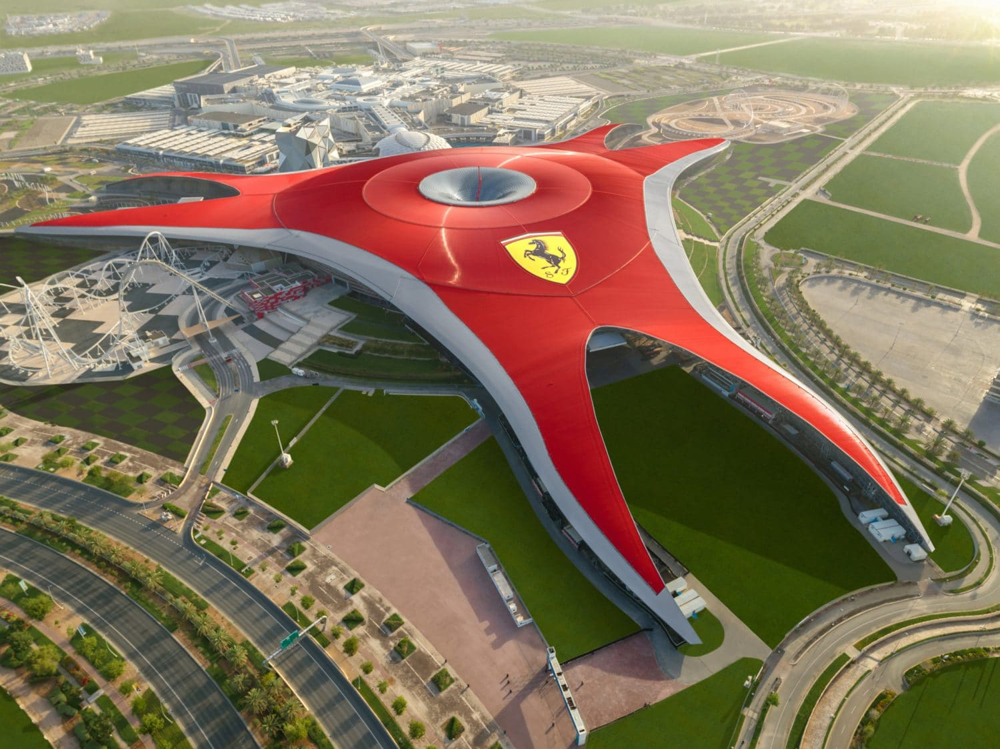
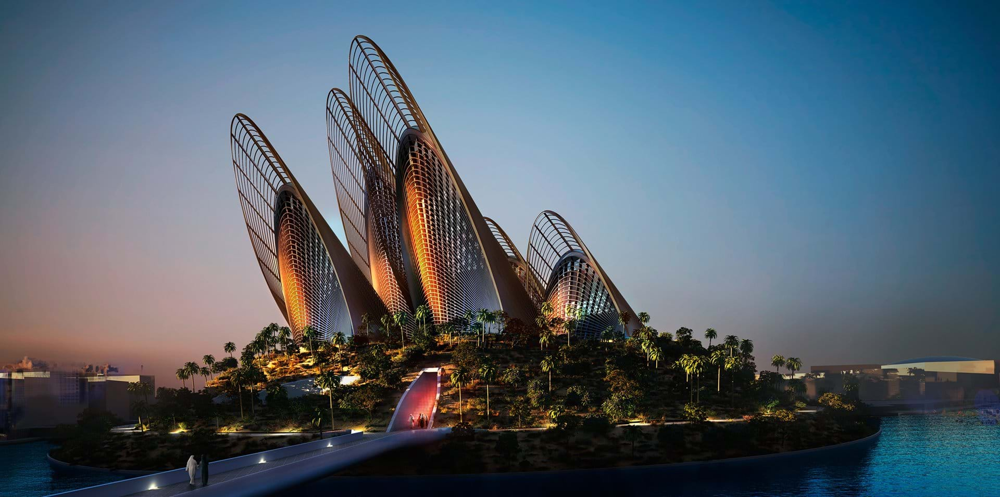
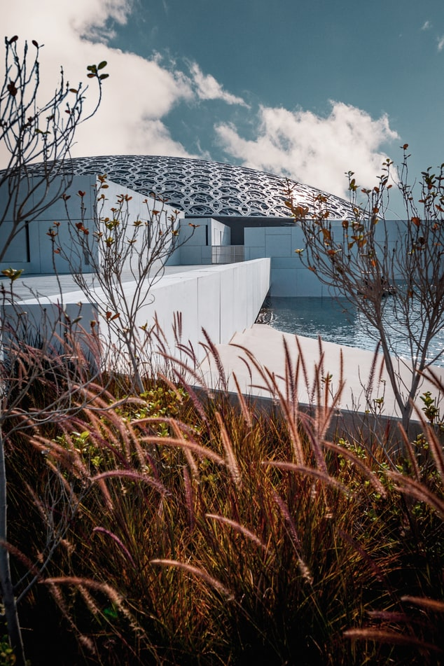
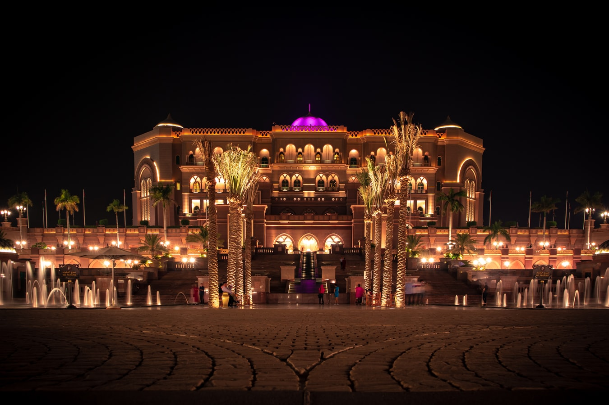
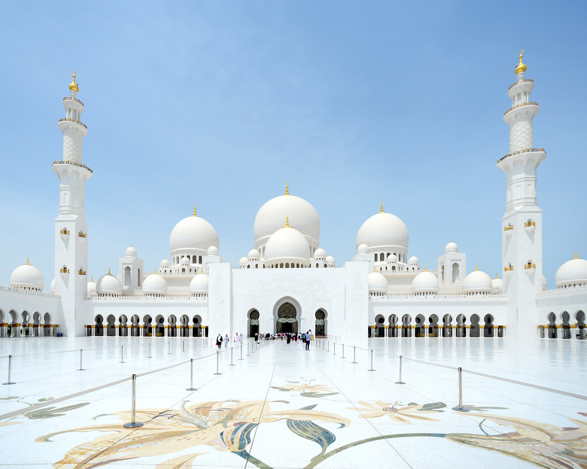
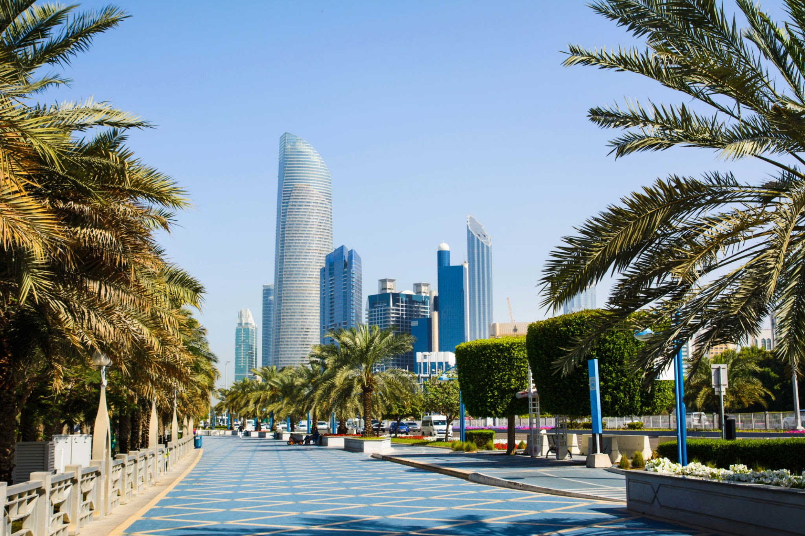
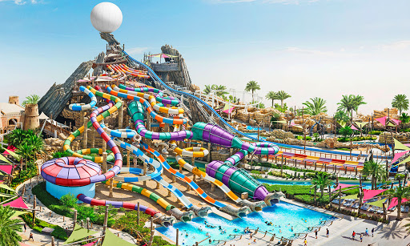
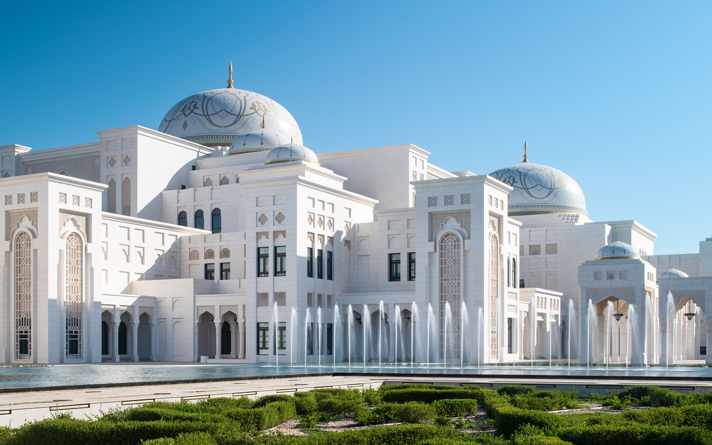
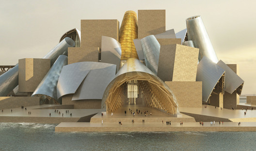

Ferrari World
Ferrari World es un parque de atracciones temático dedicado a Ferrari que encuentra situado en isla Yas. Fue inaugurado oficialmente el 4 de noviembre de 2010. Ocupa una superficie de 200.000 metros cuadrados

Zayed National Museum
El Museo Nacional Zayed es un museo planificado, que se ubicará en Abu Dhabi. Está diseñado como un monumento al difunto Zayed bin Sultan Al Nahyan, el padre fundador y primer presidente de los EAU.

Louvre Abu Dabi
El Louvre Abu Dhabi es un museo en Abu Dabi, inaugurado oficialmente el 8 de noviembre de 2017.1 Es uno de los componentes de un gigantesco distrito cultural erigido en la isla de Saadiyat, junto a otros tres museos y a un centro de entretenimiento.

Hotel Emirates Palace
El Emirates Palace es un hotel de lujo situado en Abu Dabi, capital de los Emiratos Árabes Unidos. Se inauguró en noviembre de 2005 pero algunos restaurantes y balnearios no abrieron hasta un año más tarde. El hotel lo construyó el gobierno de Abu Dabi, que es también su propietario, los costes para la construcción del hotel ascendieron a 3 billones de dólares.

Mezquita Sheikh Zayed
La mezquita Sheikh Zayed es una mezquita situada en Abu Dabi, en los Emiratos Árabes Unidos. Su nombre hace honor al primer presidente de los Emiratos Árabes Unidos, Zayed ibn Sultán Al Nahayan, que falleció en 2004. 1 Su lugar de descanso final se encuentra en los terrenos junto a la misma mezquita.

Corniche
La Corniche (o Corniche Road ) tiene 8 km de largo e incluye áreas de juegos infantiles, ciclovías y senderos peatonales, restaurantes, cafeterías y la playa de Corniche.Forma una curva de barrido en el lado occidental de la isla principal de Abu Dhabi y está repleta de ciclovías, fuentes y áreas de parques. Entre 2002 y 2003, se recuperó la tierra del mar y se amplió el Corniche.

Yas Waterworld
Yas Waterworld Abu Dhabi es un parque acuático temático ubicado en la isla de Yas en Abu Dhabi, el parque alberga más de 40 atracciones, toboganes y atracciones, incluido Bubble's Barrel, Rush Rider y Bandit Bomber, que es la montaña rusa suspendida más larga del Oriente Medio con más de 550 metros de largo.

Palacio de la Nación
Qaṣr Al-Waṭan (Palacio de la Nación), es el palacio presidencial en Abu Dhabi. Para celebrar la herencia del país, el Gobernador de Abu Dhabi, el Presidente de los Emiratos Árabes Unidos, el Príncipe Heredero de Abu Dhabi y el Comandante Supremo Adjunto de las Fuerzas Armadas de los EAU decidieron para abrir el palacio abierto al público en 2019

Guggenheim
El Guggenheim Abu Dhabi es un museo de arte planificado , que se ubicará en el distrito cultural de la isla Saadiyat en Abu Dhabi , Emiratos Árabes Unidos . Una vez finalizado, está previsto que sea el más grande de los museos Guggenheim. El arquitecto Frank Gehry diseñó el edificio.